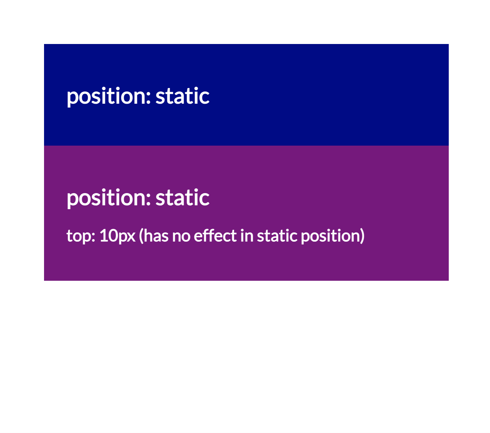
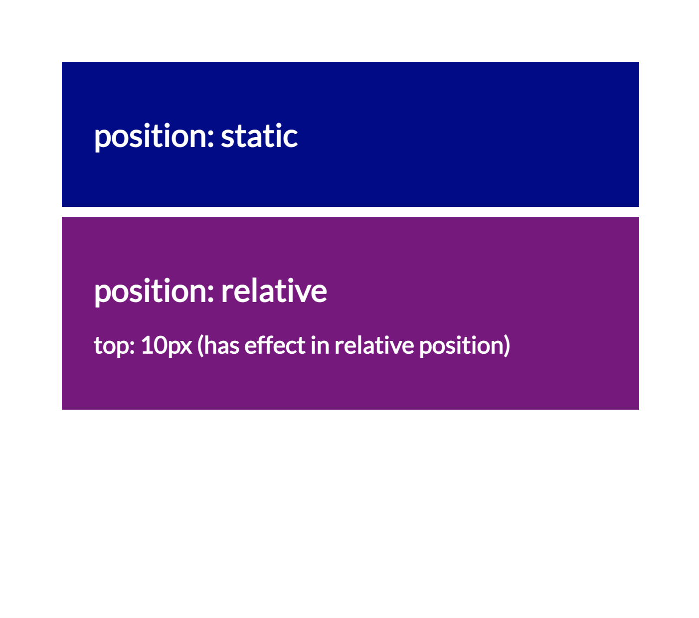
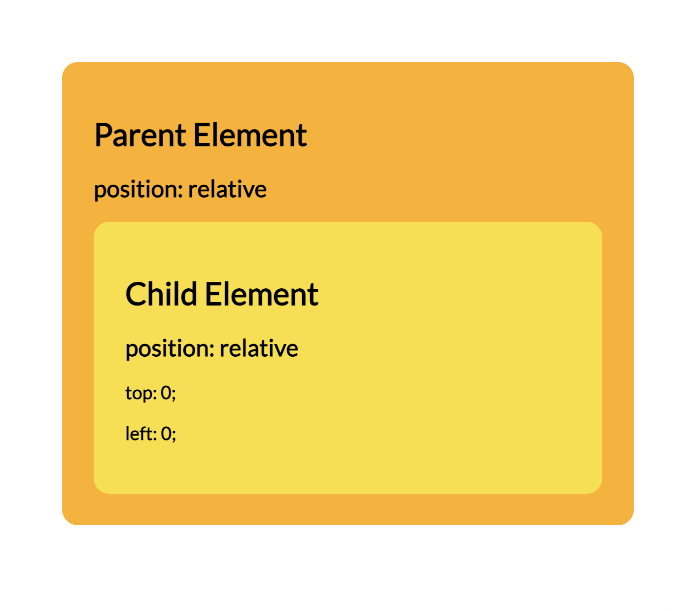
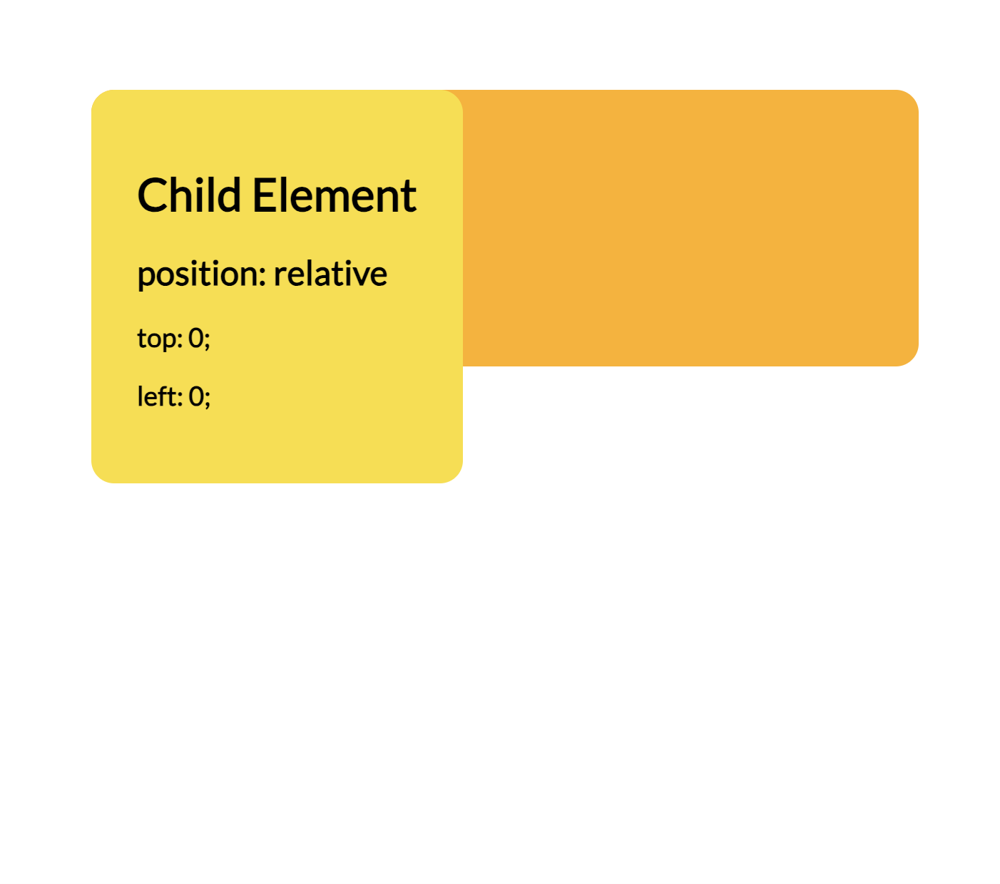
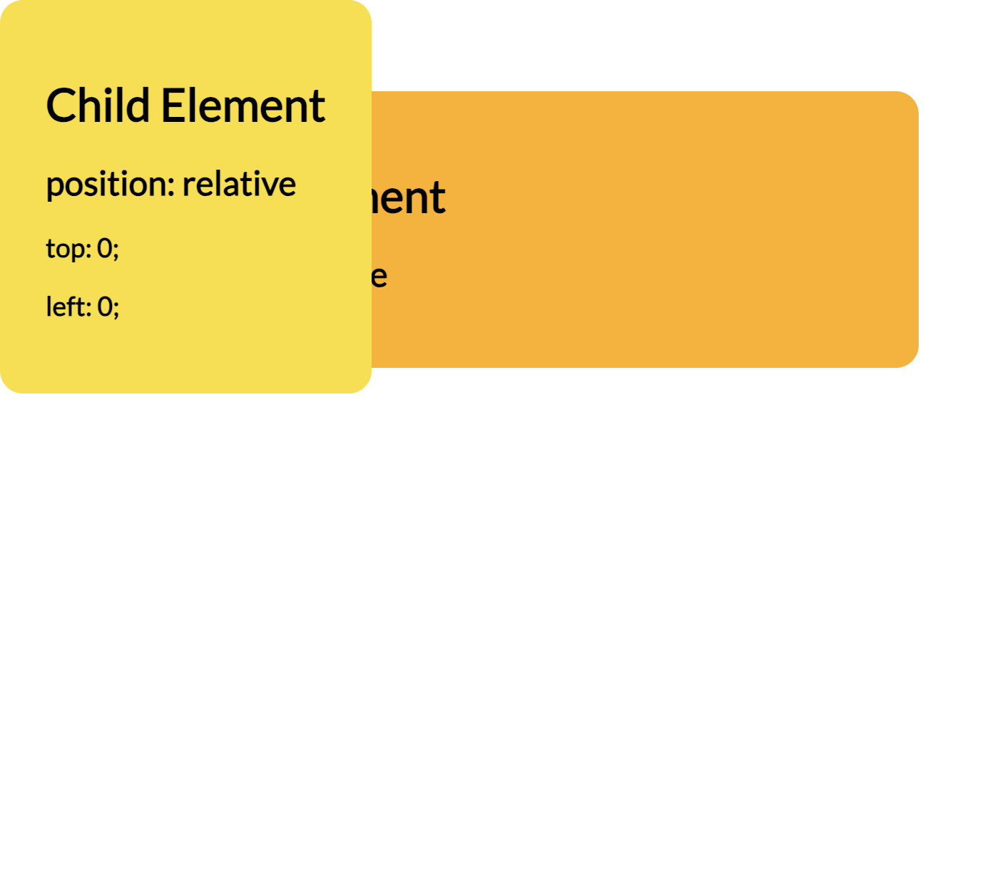
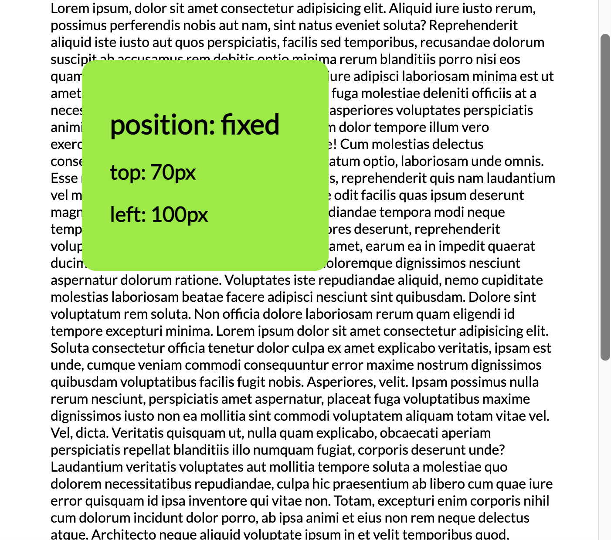
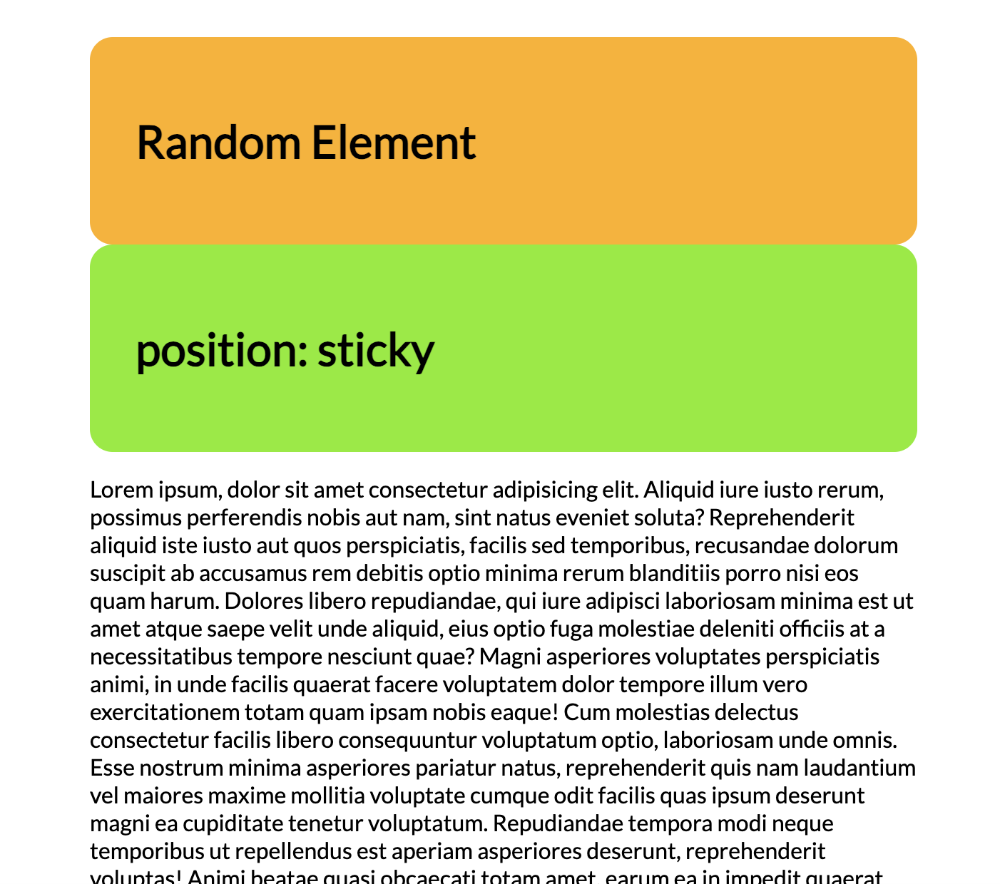
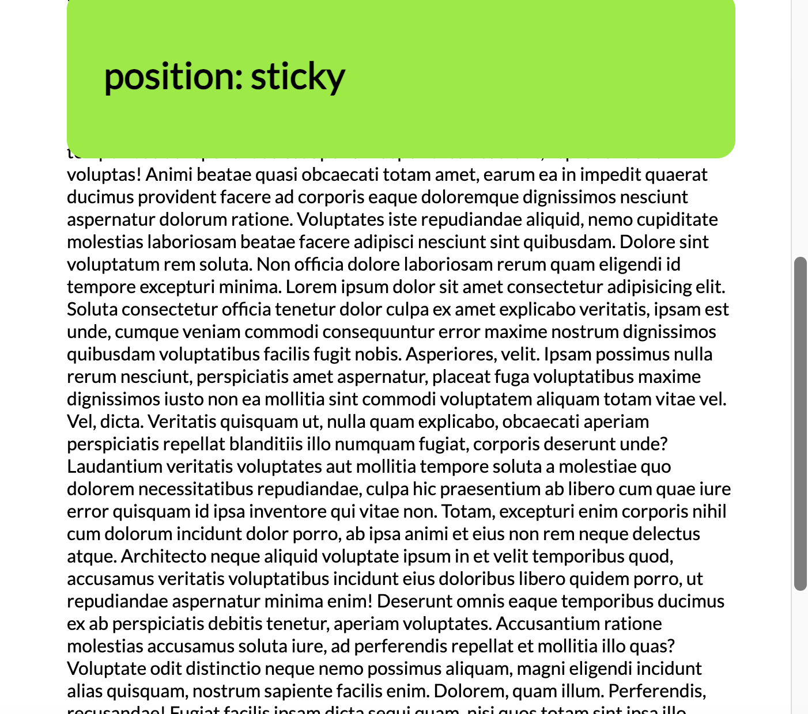

position: static; (default)
Static is the default value. Static positioning means the element remains positioned in the order it occurs, or in other words, according to the normal flow of a document.
The browser assumes elements are statically positioned unless declared otherwise. It is the same as not setting the position property at all.
Box offset properties like top, right, bottom, and left have no effect on how static elements are displayed.
Here is the HTML markup we'll use to explore this:
<div class="box1">
<h1>position: static</h1>
</div>
<div class="box2">
<h1>position: static</h1>
<h2>top: 10px</h2>
</div>
Here is the CSS:
.box1 {
position: static;
}
.box2 {
position: static;
top: 10px;
}
What happens when the second box's position is set to top: 10px? You would think it would move down by 10 pixels, right?

It didn't move!
When an element does not have its position set (in other words, it is positioned statically), box offset properties do not effect how it is displayed.
Setting top: 10px will not have an effect on the second box unless its position is set to something other than static.
Let's try changing it to position: relative. We'll dive into this position value next.
.box1 {
position: static;
}
.box2 {
position: relative;
top: 10px;
}
Poof! There's a gap between the two boxes.

Now the second box is positioned 10 pixels down from where it normally would have been (as seen when it was statically positioned).
Okay... position: relative made things work... but what does that mean?
Let's get into it!
position: relative;
Similar to static positioning, relative positioning sets the element in the order it occurs in the normal flow of a document. When a relatively positioned element has its top, right, bottom, or left properties set, it adjusts itself in relation to its original position in the normal flow.
In the example above, once we changed the second box to be relatively positioned, the top: 10px property finally had an effect. The second box moved 10 pixels down from where it would normally be.
Let's look at another way we can use position: relative: in a parent-child relationship!
Here's the HTML markup we'll be using:
<div class="parent">
<h1>Parent Element</h1>
<h2>position: relative</h2>
<div class="child">
<h1>Child Element</h1>
<h2>position: relative</h2>
</div>
</div>
And here's the CSS:
.parent {
position: relative;
}
.child {
position: relative;
top: 0px;
left: 0px;
}
Now let's see what this looks like.

Look at that! The yellow box is nicely nested within its parent element, the orange box. Its box offset properties, top: 0 and left: 0, make it sit flush against the top and left, positioning itself no further than the text within its parent element.
Absolutely positioned elements, however, have a mind of their own!
position: absolute;
Setting an element to position: absolute removes it from the normal flow of the document entirely. An absolutely positioned element positions itself with respect to the document body or its containing ancestor element.
An element in absolute position must have either the top or bottom properties set to appear on the page.
Let's change our child element's position and see absolute positioning in action!
.parent {
position: relative;
}
.child {
position: absolute;
top: 0px;
left: 0px;
}

The yellow box is no longer nested in its parent element! In fact, it's overlapping the orange box.
Since the parent element (the orange box) is still set to position: relative, although the child element (the yellow box) has been taken out of the normal document flow, the child is positioning itself flush against the top and left edges of the orange box. And since it is now on an overlapping layer, it is even covering the text inside the parent.
But what happens when we don't set the parent element's position at all?

Whoa! The yellow box completely flew out of its parent element!
Why did that happen? When you take a child element out of the normal flow of a document using absolute positioning, it looks for a parent or the next closest ancestor element with an explicitly defined position (not static). If it cannot find a non-static ancestor element, the furthest ancestor element a child element will position itself in relation to is the <body> element.
Since the parent element's position was unset (static), the absolutely positioned child element had no containing block and broke out of the parent element to position itself in relation to the document's <body> (the furthest up the family tree it can go).
Unlike relatively positioned elements, the space the absolutely positioned element would have occupied closed up without affecting the positioning of surrounding elements. In relative position, when box offset properties are adjusted, the space the element would have occupied in the normal flow is preserved and appears as visible empty space.
Since absolutely positioned elements operate outside of the normal flow entirely, this positioning method comes in handy for when you need to develop isolated features that don't disrupt the layout of a webpage. For example, hamburger menus, pop-up boxes, control menus (like an accessibility toolbar), and much more!
position: fixed;
Fixed elements are removed from the document flow and positioned relative to the viewport rather than another element in the document.
An element in fixed positioning needs either the top or bottom properties set to appear on the page.
To look at this, here's the HTML we're using:
<div class="fixed-element">
<h1>position: sticky</h1>
<h2>top: 70px</h2>
<h2>left: 100px</h2>
</div>
<p>lorem500</p>
I'd recommend you add just enough lorem text so you can scroll! Here's the CSS we're working with:
.fixed-element {
position: fixed;
top: 70px;
left: 100px;
}
Feel free to adjust the box offset properties to your liking. Now let's see what happens!

The green box is stuck in the same position, even when we scroll!
This is what makes fixed positioning unique. Fixed elements behave similarly to absolutely positioned elements in that they function outside of the document flow on an overlapping layer. However, unlike absolutely positioned elements, fixed elements stay in one fixed position relative to only the viewport, even as the document scrolls. They do not position themselves in relation to other elements.
What if you wanted to remain fixed, but only at a certain point in scrolling?
position: sticky;
Sticky positioning falls in between relative and fixed.
Similarly to both relatively and fixed positioned elements, sticky positioning also requires a top or bottom property to function, but the element will remain visible on the page.
What does that mean? Let's find out!
Here's the markup we're using:
<div class="random-element">
<h1>Random Element</h1>
</div>
<div class="sticky-element">
<h1>position: sticky</h1>
<h2>top: 0</h2>
</div>
<p>lorem500</p>
And the CSS:
.sticky-element {
position: sticky;
top: 0;
}
A stickily positioned element initially behaves as though it is relatively positioned, setting itself in relation to its normal position in the document flow.

However, when scrolling, once you land on its specified position relative to the viewport, the element becomes fixed in position.

When you return to its initial position, it behaves like a relatively positioned element again.